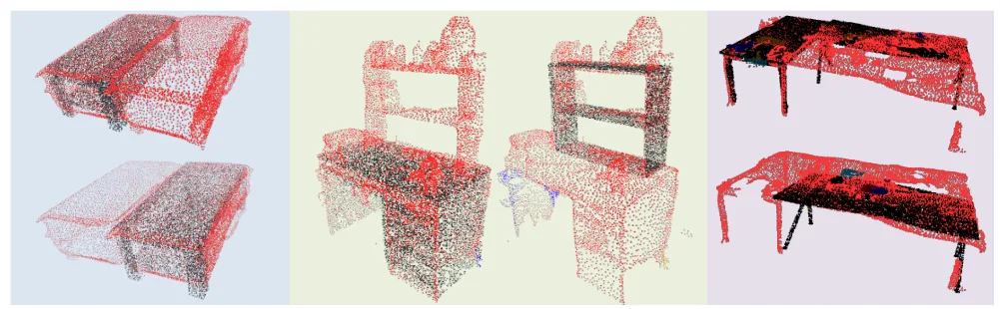
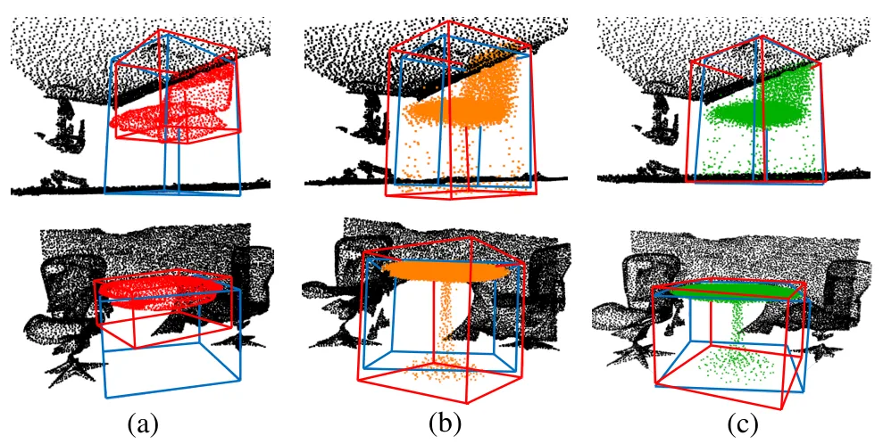
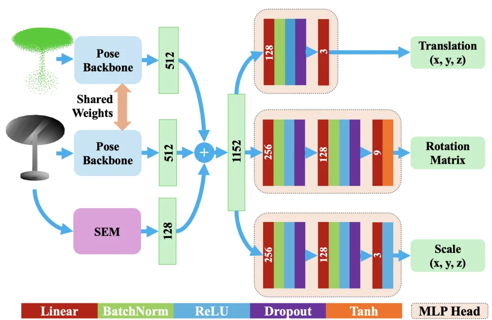
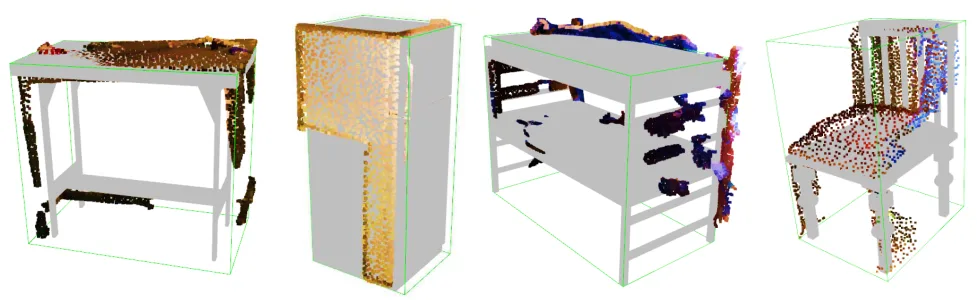
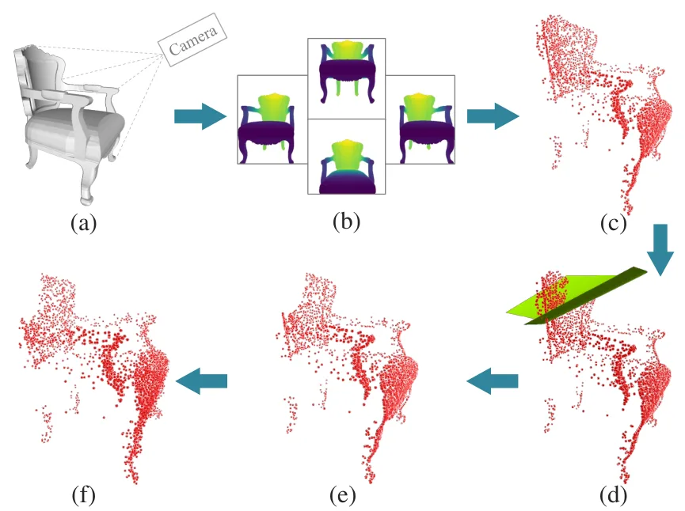
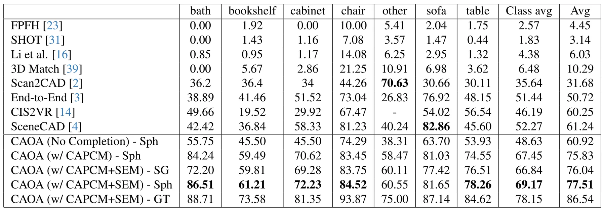
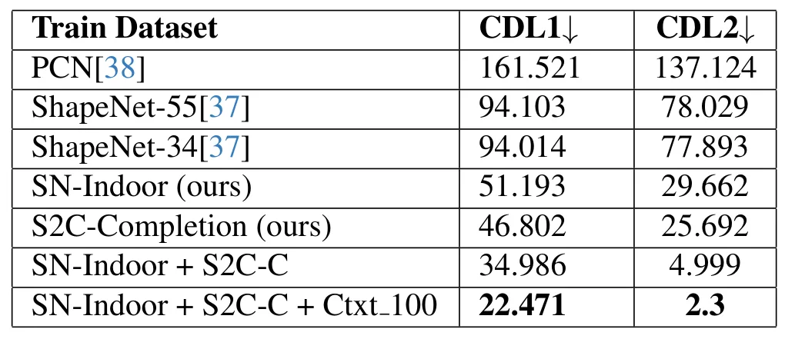
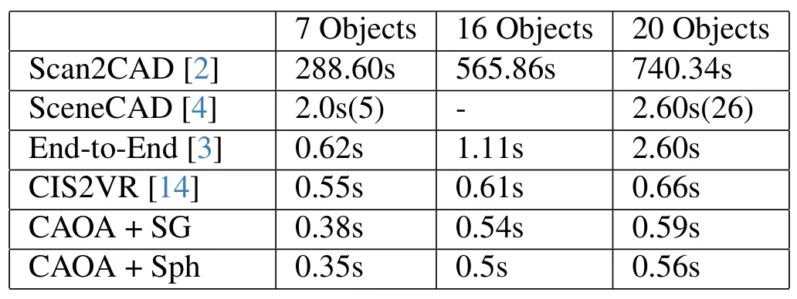

CAOA：由点云补全辅助的物体-CAD 对齐CAOA -- Completion-Assisted Object-CAD Alignment
与 RGB-D 三维重建、CAD map、对象级 SLAM 和语义建图直接相关；需重点看其对分割误差、对称歧义和真实扫描噪声的鲁棒性。
一句话工作总结
CAOA 先补全真实 RGB-D 扫描物体点云，再用对称性感知位姿估计完成 CAD 9DoF 对齐，面向对象级三维语义重建。
摘要
在室内 RGB-D 扫描中把 CAD 模型精确对齐到对应物体，是三维语义重建的重要挑战。该任务需要估计包含位置、旋转和三轴尺度在内的 9DoF 位姿，但真实扫描的噪声、不完整性和分割误差会导致几何畸变。CAOA 将一个语义与上下文感知的点云补全模块和一个对称性感知相对位姿估计算法结合，用补全缓解缺失扫描造成的形状偏差，再用 symmetry-aware loss 处理对称物体的姿态歧义。作者还提出面向室内场景的合成数据生成策略以缩小 synthetic-to-real gap，并发布 S2C-Completion：基于 Scan2CAD、包含 8500+ expert-annotated object-CAD pairs 的真实室内单物体补全基准。CAOA 在 Scan2CAD benchmark 上相对 SOTA 提升约 17% accuracy。
Accurately aligning CAD models to their corresponding objects in indoor RGB-D scans is a central challenge in 3D semantic reconstruction. The task requires estimating a 9-Degree-of-Freedom (DoF) pose-position, rotation, and scale along three axes-but is hindered by noisy and incomplete scans, as well as segmentation errors that cause geometric distortions. We present Completion-Assisted Object-CAD Alignment (CAOA), a method that integrates a semantically and contextually aware point cloud completion module with a symmetry-aware relative pose estimation algorithm, enabling precise alignment of CAD models to scanned objects. Existing completion methods are typically trained and evaluated on synthetic datasets, which often fail to generalize to real-world scans. To bridge this gap, we introduce a synthetic data generation strategy tailored to indoor scenes, significantly reducing the synthetic-to-real domain gap-validated through quantitative comparisons with widely used completion datasets. In addition, we release S2C-Completion, an expert-annotated dataset of over 8,500 object-CAD pairs from Scan2CAD, created for real-world indoor single-object completion and intended as a new benchmark for this task. For object-CAD alignment, we incorporate symmetry information via a symmetry-aware loss, improving robustness to symmetric ambiguities. On the Scan2CAD benchmark, CAOA achieves a 17% accuracy improvement over state-of-the-art methods.
中文解读摘录
- 链接：abs / PDF；作者：Hiranya Garbha Kumar, Minhas Kamal, Balakrishnan Prabhakaran；类别：cs.CV, cs.AI, cs.LG；采集 score=7。
- 核心思路：面向室内 RGB-D 扫描中的物体-CAD 9DoF 对齐，先用语义与上下文感知的点云补全模块缓解扫描缺失/噪声，再用 symmetry-aware relative pose estimation 提升对称物体下的鲁棒性。
- 数据与效果：提出 S2C-Completion，包含 8500+ Scan2CAD object-CAD 对，用作真实室内单物体补全基准；在 Scan2CAD benchmark 上较 SOTA 提升约 17% accuracy。
- 关注点：和语义三维重建、CAD map、object-level SLAM 有较高相关性；建议看补全模块是否能处理真实 RGB-D/SLAM 点云的分割误差，以及对称损失如何影响尺度/姿态歧义。
图表/页面预览

{kind=link}

{kind=link}

{kind=link}

{kind=link}

{kind=link}

{kind=link}

{kind=link}

{kind=link}
